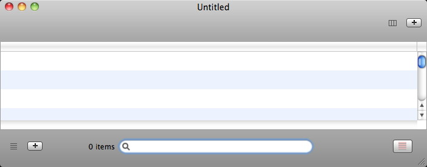
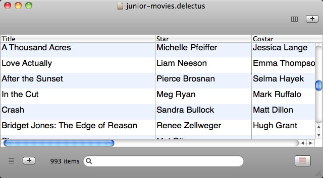

Delectus creates, edits, and saves lists. Lists of what? Anything you choose!
A Delectus list is made of rows that are divided into columns. You decide how many columns to make and give each one a label. You decide how many rows to add. You decide what text to put in each column of each row.
Delectus was originally designed to help a little old lady keep track of all the movies in her very large collection, but you can use it to keep lists of anything you like.
The Main Window
The first time you launch Delectus it creates an empty document window. The window looks something like this:

The main parts of the window are:
The Main List Area is the are in the middle, drawn with alternating blue and white rows. It shows the items in the document.
The Add Columns button is at the top right corner. It enables you to add columns to your list.
The Add Rows button at the bottom left corner offers the same function for rows, enabling you to add them as needed.
The Filter Box is the text field at the bottom center, marked with a magnifying glass icon. By typing text into it, you can filter out rows that don't interest you. Any rows that don't match what you type disappear until you clear the Filter Box.
The Show Deleted Items Button reveals items that have been deleted. Deleted items are drawn in red when they are revealed.
Here's what a list looks like when it's filled with items:

Each item is on its own row. The columns ("Title", "Star", and "Costar" in the example) are names that you create, using the Add Column button.
Items in the list appear in the same order that you add them. When you add a new row, it appears at the end of the list. When you add a new column, it appears at the far right.
If you want to change the order of items, you can click the top of a column to sort the rows by the items in that column. Click once, and the column sorts in ascending order; click a second time, and it sorts in descending order. If you click the column a third time, it returns the rows to their original order, the order in which you entered them.
If all the items in a column are numbers, Delectus automatically notices and sorts the rows numerically, instead of alphabetically.
The label to the left of the Filter Box gives a count of the items that are visible. If there's no text in the Filter Box, it's a count of all the items in the list. When you type text in the Filter Box, the count changes to show how many items remain after those that don't match have been filtered out.
How to Create a Document
How do you get from an empty document, like the one at the top of this page, to a filled document, like the one below it?
Easy:
Start by launching Delectus, or, if it's already running, pull down the "File" menu and choose "New". Delectus creates a new empty document.
Add some columns by clicking the Add Column button at the top right. Delectus asks you for a label for each new column. It won't let you use a label if there's already a column in the document that uses it; each column has to have its own unique label.
Add a row by clicking the Add Row button at the bottom left. Delectus adds a new empty row. You can type any information you like into each column of the new row by clicking in the row. You don't have to add information to every column. In fact, you can leave the whole row empty if you want, but then it might be a little bit hard to tell it's there.
When you're done entering your information, save the document. Pull down the "File" menu and choose "Save", or "Save As", and choose a place to save your new list document.
That's it! The next time you open that document, your items will be in it. Make sure you remember where you saved it!